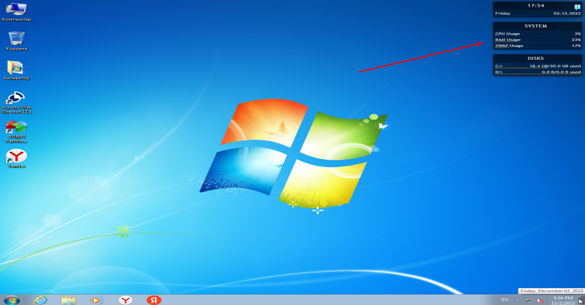
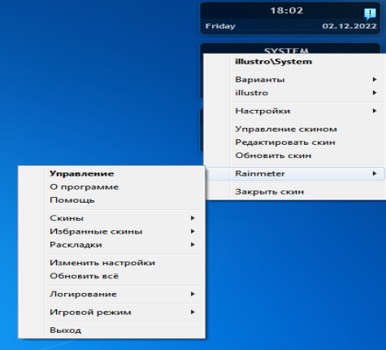
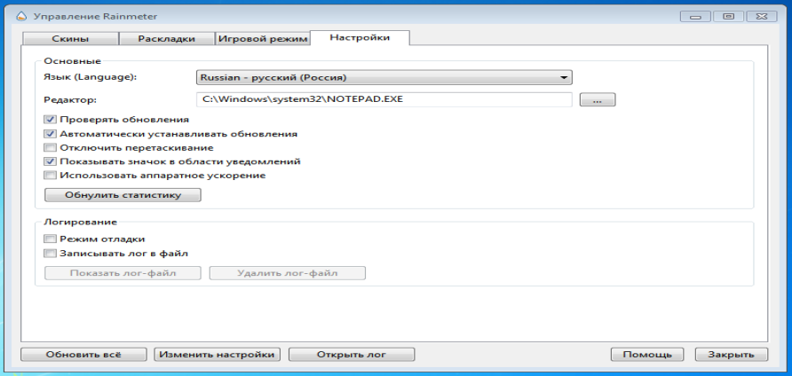
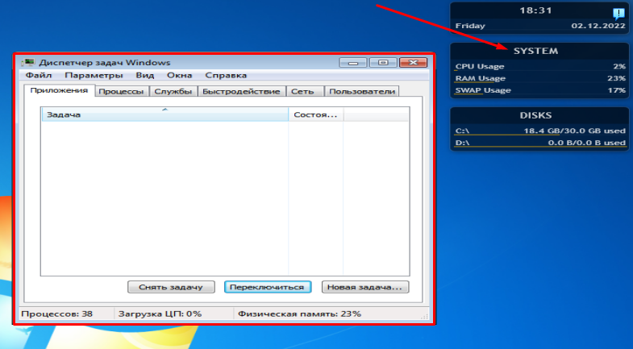
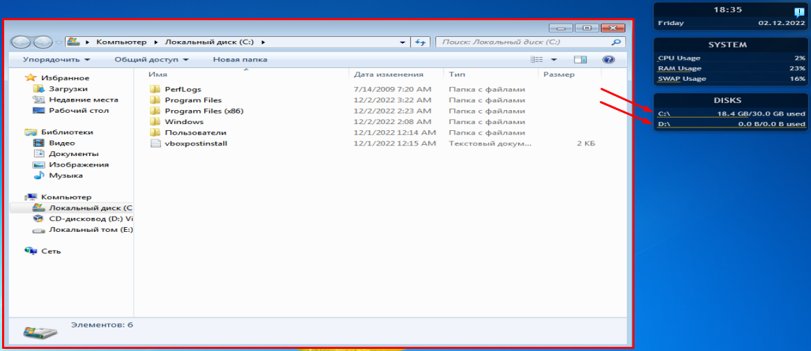

Rainmeter – набор виджетов в стиле Windows 7, который поддаётся гибкой настройке по желанию пользователя. Разработчиком данного приложения является человек под ником Rainy.
Данное программное обеспечение даёт возможность кастомизации встроенных в приложении виджетов, начиная с отображения часов и заканчивая мониторингом температуры процессора, его загрузки, а также ОЗУ и многого другого.
Инсталляция не представляет собой ничего сложного – скачайте программу и запустите установщик. Следуйте простым инструкциям и дождитесь завершения процесса.
Главное отображение программа получает на рабочем столе.

Рисунок 4.2.1 – отображение функционала программы на рабочем столе.
В данный момент программа настроена на отображение даты, состоянии системы, конкретнее загрузки ЦП, ОЗУ и свопа (подкачки страниц), а также использования дисков.
При нажатии ПКМ по данному виджету проявится меню, где имеется множество настроек, позволяющих добавить какую-то необходимую информацию или же убрать, также имеется настройка визуального отображения виджетов. Данная возможность появляется при скачивании визуальных стилей с личного сайта разработчика.

Рисунок 4.2.2 – меню настройки приложения Rainmeter.
Также такая возможность имеется нажатие на клавишу «Отображать скрытые значки» на панели задач и дальнейшем нажатии правой кнопкой мыши на значок данного приложения.
Отсюда можно перейти в меню управления Rainmeter. Функционал, скрытый в данном меню крайне прост.

Рисунок 4.2.3 – окно управления Rainmeter.
В первой вкладке «Скины» имеется только возможность изменения визуального стиля приложения. В ней можно поменять прозрачность виджетов, положение и многое другое.
Вторая вкладка «Раскладки» взаимосвязана со второй и позволяет сохранять и восстанавливать текущую организацию Rainmeter скинов, включая позиции запущенных и закрытых скинов. Папки и файлы скинов не сохраняются.
Третья вкладка «Игровой режим» позволяет настроить действия приложения Rainmeter при запуске игр и других приложений для оптимизации работы ПК за счёт возврата памяти, которое берёт приложение.
Четвёртая вкладка «Настройки» даёт возможность изменения языка, редактора, проверки обновлений, их автоматической установки, а также фиксации виджета и многого другого.
У приложения имеется также скрытый функционал. По нажатию на виджете на надпись «System» будет открыт диспетчер задач.

Рисунок 4.2.4 – результат нажатия на скрытую кнопку «System».
Другим скрытым функционалом является возможность нажатия на виджете «Disks» на тот или иной диск. Результатом данного действия будет являться тот или иной открытый корень логического диска.

Рисунок 4.2.5 – результат нажатия на тот или иной диск на виджете «Disks».
В заключении, я отмечу, что функционал этой программы является полезным, но потребление ресурсов вашего компьютера вырастает, крайне это заметно при нескольких открытых браузерах и множестве открытых вкладок в них. По этой причине необходимость установки на ваш персональной компьютер данного приложения становится сомнительным.